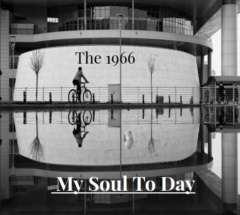

Design a Band Challenge
Challege Information
For Quarter 4, we are learing about design thinking. Design thinking is putting yourself in the shoes or the perspective of your audience. The steps of a DEEP design thinking processing is basically like a big survey. You figure out what colors attract more people and or what font they prefer. After you have gathered the informaton, you sort of what to incorporate that into your album or your product. In class we did something similar and went around the room collecting our class mate's preferences between the two band covers we made.
Album Cover
Band Biography
The members are Cole, Kayden, Ryder, Carter, Vinnie, and Nathan. This band met at TK Noodles.
Each member has a different story and history for their love of music. On a cold rainy day, 6 guys entered
TK Noodles expecting they would be enjoying a nice hot bowl of soup, but something took a turn for the better.
The power suddenly went out and the once cozy warm restaurant instantly turned into a cold isolating environment.
Everyone in the restaurant ate in awkward silence and one brave soul, Cole, decided to entertain them with the tapping of their drumsticks.
another, Ryder, decided to take out their guitar and strum along with the music. In the front of the restaurant, there was a keyboard and one, Vinnie,
decided to play along with the melody.
This instantly changed the environment making everyone dance along. Then to top it off, three individual, Kayden, Carter, Nathan, decided to add lyrics and vocals to this song.
After their little concert, the 6 individual decided to introduce each other to one another. After what just happened, each one wanted to continue whatever this was and
decided that they should join a band. They all instantly clicked for their love for 80s music. They look up to classic legendary 80s band such as ACDC, Guns n Roses, Scorpions,
and the individual, Jon Bon Jovi. They continued to play at small restaurants and small stores.